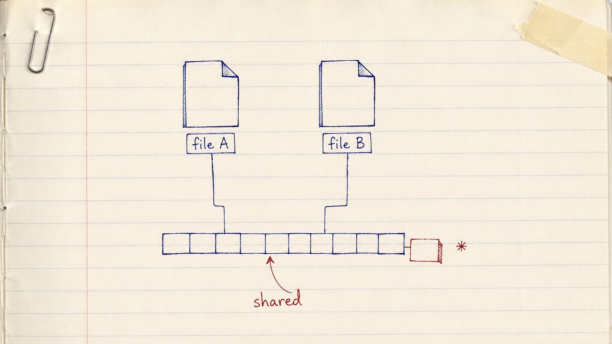

One real application · read end to end
Understanding Rust
FileCleaner App
A macOS tool that reclaims duplicate-file space by deleting nothing at all — and what its ~3,600 lines of Rust can teach you about writing your own.
Told by The Crafter — precise, incremental, one module at a time

A hand-drawn practice-notebook sketch: ballpoint linework with red-pen annotation on cream ruled paper, slightly imperfect strokes, hand-lettered arrows and margin marks, a hint of tape or paper-clip realism. Warm and informal — obviously drawn by a person, not rendered. Subject: two simple file-page icons drawn side by side near the top, each with its own small hand-lettered name tag; from the bottom edge of each, a thin ballpoint line runs down to the SAME single horizontal row of small rectangles below them, drawn like a strip of disk blocks — the two files visibly sharing one row of storage. In red pen, a curved arrow points at the join with the hand-lettered word "shared", and at the far right one block of the strip has been redrawn slightly offset with a small red asterisk beside it, suggesting one copy has begun to diverge. Generous whitespace; no text baked in beyond the two short tags and the words described. Target size ~1280×720px, 16:9 landscape; compose for a small on-page figure with the subject centred and safe margins — it is letterboxed into a 16:9 box, so keep nothing important near the edges.
Generate this with your image agent, then drop the file here.
Table of Contents
Twelve chapters, following the program's own data flow
Part I · Orientation
- A Tool That Deletes Nothingthe problem, the CLI, the crate layout
- APFS Clones, and Calling clonefile from Rustcopy-on-write, FFI, unsafe, errno
Part II · Finding the Duplicates
- The Domain, Written as Typesnewtypes, groups, eligible targets
- Walking the Diskwalkdir, filters, ownership in the loop
- The Index That Remembersrusqlite, WAL, borrows as guarantees
- The Candidate Funnelsize → fingerprint → hash → bytes
Part III · Rust Craft in the Middle
- Errors: anyhow at the Edges, thiserror in the Coretwo crates, one clean split
- A Seam for Failure: the ApfsAdapter Traitone trait, and a disk that can fail on cue
Part IV · Replacing a File Safely
- Preflight: Earning the Right to Touch a Fileten read-only checks, and the plan
- The Journaled Transactionclone, verify, swap, validate, commit
- Metadata Fidelityxattrs, ACLs, birth time, and order
- Crash Recovery, and What We Gainedroll back, roll forward, sleep well
Every code listing in this book is real code from
sunprema/file_cleaner, and every listing says which file it came from.
Where a listing is shortened, the cut is marked. Jump to the Cheatsheet →